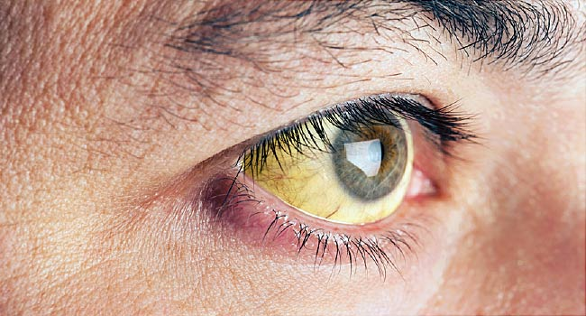

10 best foods for eye health and eyesight
 Newsletter
Top 10 foods for healthy eyes
Medically reviewed by Natalie Olsen, R.D., L.D., ACSM EP-C — Written by Zawn Villines on March 17, 2018 Best foods Daily doses Eye health tips Warning signs SummaryWe include products we think are useful for our readers. If you buy through links on this page, we may earn a small commission. Here’s our process.
People often believe that failing eyesight is an inevitable result of aging or eye strain. In truth, a healthy lifestyle can significantly reduce the risk of eye health problems.
The Age-Related Eye Disease Study (AREDS), published in 2001, found that certain nutrients — zinc, copper , vitamin C, vitamin E, and beta carotene — may reduce the risk of age-related decline in eye health by 25 percent .
This study was updated in 2013 to test different versions of the original formula. The variations included omega-3 fatty acids, zeaxanthin, lutein, and beta carotene; the study found that certain combinations may work better than others.
Further studies agree that omega-3 fatty acids (including DHA), copper, lutein, and zeaxanthin are vital for eye health.
In this article, we look at the evidence for 10 nutrient-rich foods to boost eye health. We also discuss other tips for healthy eyes and eye health warning signs.
Ten best foods for eye health
Organizations such as the American Optometric Association (AOA) and the American Academy of Ophthalmology (AAO) continue to recommend nutrients for eye health based on the AREDS reports.
The AREDS reports support the following 10 nutrient-rich foods:
1. Fish
Share on Pinterest Maintaining a healthy lifestyle can help to lower the risk of eye problems.Many fish are rich sources of omega-3 fatty acids.
Oily fish are fish that have oil in their gut and body tissue, so eating them offers higher levels of omega-3-rich fish oil. The fish that contains the most beneficial levels of omega-3s include:
tuna salmon trout mackerel sardines anchovies herringSome studies have found that fish oil can reverse dry eye, including dry eye caused by spending too much time on a computer .
2. Nuts and legumes
Nuts are also rich in omega-3 fatty acids. Nuts also contain a high level of vitamin E, which can protect the eye from age-related damage.
Nuts are available for purchase in most grocery stores and online. Nuts and legumes that are good for eye health include:
walnuts Brazil nuts cashews peanuts lentils3. Seeds
Like nuts and legumes, seeds are high in omega-3s and are a rich source of vitamin E.
Seeds are available for purchase in most grocery stores and online. Seeds high in omega-3 include:
chia seeds flax seeds hemp seeds4. Citrus fruits
Citrus fruits are rich in vitamin C. Just like vitamin E, vitamin C is an antioxidant that is recommended by the AOA to fight age-related eye damage.
Vitamin C-rich citrus fruits include:
lemons oranges grapefruits5. Leafy green vegetables
Leafy green vegetables are rich in both lutein and zeaxanthin and are also a good source of eye-friendly vitamin C.
Well-known leafy greens include:
spinach kale collards6. Carrots
Carrots are rich in both Vitamin A and beta carotene. Beta carotene gives carrots their orange color.
Vitamin A plays an essential role in vision. It is a component of a protein called rhodopsin, which helps the retina to absorb light.
Research on beta carotene’s role in vision is mixed , though the body needs this nutrient to make vitamin A.
7. Sweet potatoes
Like carrots, sweet potatoes are rich in beta carotene. They are also a good source of the antioxidant vitamin E.
8. Beef
Beef is rich in zinc, which has been linked to better long-term eye health. Zinc can help delay age-related sight loss and macular degeneration .
The eye itself contains high levels of zinc, particularly in the retina, and the vascular tissue surrounding the retina.
Meats such as chicken breast and pork loin also contain zinc, but at lower levels than beef.
9. Eggs
Eggs are an excellent source of lutein and zeaxanthin, which can reduce the risk of age-related sight loss. Eggs are also good sources of vitamins C and E, and zinc.
10. Water
It may come as no surprise that a fluid essential to life is also vital to eye health.
Drinking plenty of water can prevent dehydration , which may reduce the symptoms of dry eyes .
Recommended daily intake
The current daily recommendations for healthy eye nutrients, as suggested by the AAO to slow the progression of eye disease, are:
500 milligrams (mg) of vitamin C 400 international units of vitamin E 10 mg lutein 2 mg zeaxanthin 80 mg of zinc oxide 2 mg of copper oxideOther eye health tips
Share on Pinterest Wearers of contact lenses should follow their doctors’ instructions to reduce the risk of infection.According to the AAO, the following strategies can help to ensure healthy eyes:
wearing sunglasses outside, since excessive sun exposure can cause cataracts . A range of sunglasses is available for purchase online . stopping smoking getting regular eye exams, particularly if there is a family history of eye disease wearing eye protection when working with possible eye irritants or dangerous chemicals washing hands before applying contacts wearing contacts only for the period recommended by the doctor or manufacturer protecting eyes from computer-related eye strain by looking away every 20 minutes at something 20 feet away, for 20 secondsDiabetes is a leading cause of blindness. People with diabetes should carefully monitor blood sugar levels, take medications exactly as prescribed by their doctor, and manage carbohydrate intake while focusing on eating low-moderate glycemic index (GI) foods.
Early treatment for eye health problems can prevent them from getting worse. So people who notice changes in their vision should schedule a comprehensive eye exam with an optometrist or ophthalmologist.
Warning signs for eye health
Possible symptoms that a person may be experiencing vision trouble include:
frequent changes in visual clarity seeing distorted images seeing floaters or flashes in the field of vision reduced peripheral visionSummary
Share on Pinterest Citrus fruits are rich in vitamin C which may help lower the risk of age-related eye damage.Eating a varied diet that includes lots of fruits, vegetables, and lean proteins is enough to ensure most people get the right nutrients for eye health.
People who cannot get these nutrients from their diet should ask an eye doctor about eye health supplements.
People with vision problems or those with very restrictive diets should talk to an eye health provider about the right foods to eat.
Last medically reviewed on March 17, 2018
Eye Health / Blindness Nutrition / Diet Medically reviewed by Natalie Olsen, R.D., L.D., ACSM EP-C — Written by Zawn Villines on March 17, 2018Latest news
Resiliency helps older adults deal with the pandemic Adapted yellow fever vaccine may protect against COVID-19 Brain regions found where serotonin boosts patience, impulse control Ability to lose weight is not affected by age 'Clear, balanced information' important for vaccine uptakeRelated Coverage
What to know about rat-bite fever Medically reviewed by Arefa Cassoobhoy, MD, MPHRat-bite fever is a potentially fatal bacterial infection that transmits through rats, other rodents, or contaminated food and drink. Learn more here.
READ MORE What is Stromme syndrome? Medically reviewed by Alana Biggers, M.D., MPHStromme syndrome is a rare genetic condition. It affects multiple bodily systems and causes anomalies in the intestines, eyes, and skull. Learn more…
READ MORE What to know about a low-protein diet Medically reviewed by Katherine Marengo LDN, R.D.People with kidney-related illnesses may benefit from a low-protein diet. Key changes can help people create a varied, healthful, low-protein diet…
READ MORE Should you work out when sore? Medically reviewed by Daniel Bubnis, M.S., NASM-CPT, NASE Level II-CSSPeople may sometimes experience muscle soreness during or after exercise. Read on to find out the causes of this muscle soreness and how to continue…
READ MORE What does it mean when you see stars? Medically reviewed by Ann Marie Griff, O.D.Many people say they “see stars” when they are seeing flashes of light in their field of vision. Learn about what causes these visual disturbances.
READ MORE Editorial articles Newsletters Ad Policy Contact us Privacy Settings All news topics Knowledge Center About us Privacy Terms © 2004-2020 Healthline Media UK Ltd, Brighton, UK, a Red Ventures Company. All rights reserved. MNT is the registered trade mark of Healthline Media. Any medical information published on this website is not intended as a substitute for informed medical advice and you should not take any action before consulting with a healthcare professional © 2004-2020 Healthline Media UK Ltd, Brighton, UK, a Red Ventures Company. All rights reserved. MNT is the registered trade mark of Healthline Media. Any medical information published on this website is not intended as a substitute for informed medical advice and you should not take any action before consulting with a healthcare professional About Careers Advertise with us